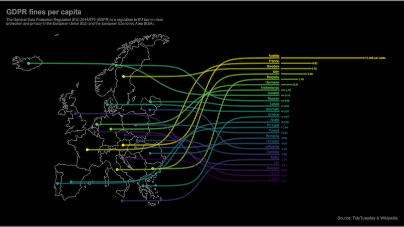
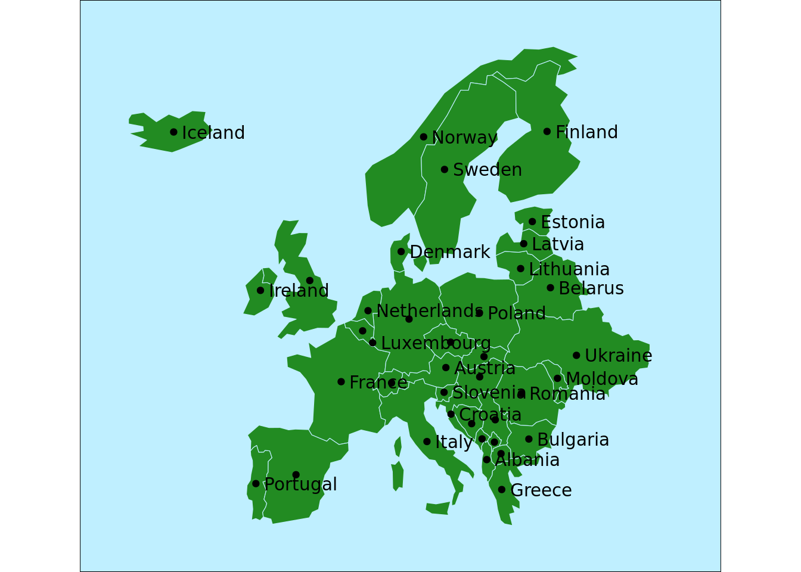
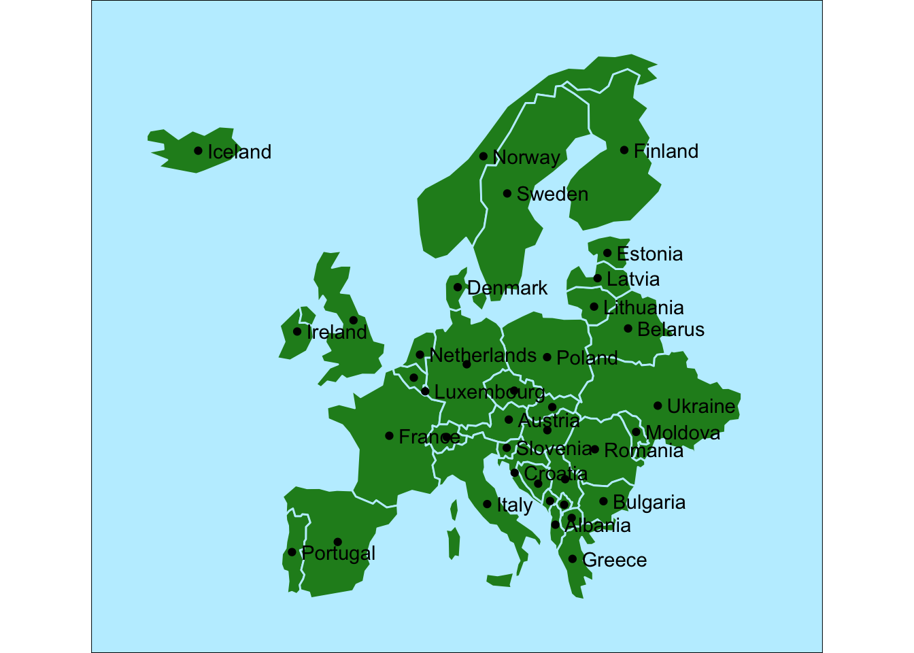
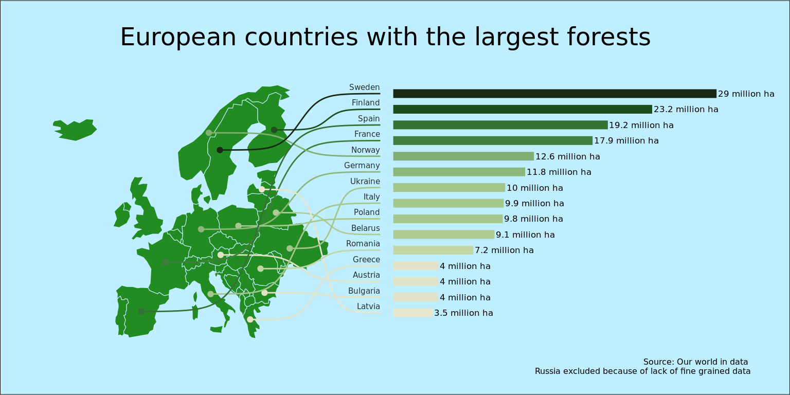

theme_deforestation = function() {
theme_void() +
theme(
plot.margin = margin(.5, 1, .5, .5, "cm"),
plot.background = element_rect(fill = "lightblue1"),
plot.title = element_text(family = "Roboto Condensed", size = 18, hjust=0.5),
plot.caption = element_text(family = "Roboto Condensed", size = 6),
axis.text.y.left = element_blank(),
axis.text.x.bottom = element_blank(),
legend.position = "none",
text=element_text(family = "Roboto Condensed")
)
}For this graph I wish to recreate a version of this excellent example map from the ggbump(Sjoberg 2020) package. I find it to be a wonderful example of using maps in data science and it is a great way to learn to use a few nice tricks in plot generation in ggplot. It would also be my entry into the world of using R for geographic data and an excellent use of the Deforestation(Ritchie and Roser 2021) dataset from TidyTuesday.
 The trick to generating this kind of chart is to play around with the coordinate system. We need to transfer the bar generation into the latitude and the longitude of of the map. I guess we could do it the other way and move the map coordinates to the coordinates of a column chart but when working with map data it seems to be far simpler to move everything else into their domain.
Themeing
Before we get into the map itself I wish to start by generating the theme separately so we don’t have to repeat it all over the code. I tend to separate the theme from the plots a lot when I am repeating similar charts over a document.
The map data
First step is the use the world dataset from the spData(Bivand, Nowosad, and Lovelace 2021) package to get a basic map of the world that we then filter to the European countries. We also exclude Russia as the dataset does not tell us how much of the forest in Russia is located inside Europe.
We then use the st_crop() function from the sf(Pebesma 2018) package to crop the chart to the area we wish to view. Then using geom_sf we render this chart in ggplot2.
map <- world |>
filter(continent == "Europe", iso_a2 != "RU") |>
st_crop(xmin = -24, xmax = 40, ymin = 33, ymax = 74)
ggplot() +
geom_sf(data=map, color="lightblue1", fill="forestgreen") +
theme_deforestation()
So far so good. Next we need to convert those polygons into their centroid points so we have something to link to when we create the path from the countries to their corresponding bar labels. For that we use the st_point_on_surface() function to pull the data into sf points and then use st_coordinates() to convert those geometries to X and Y vectors. We then retrieve the country names back from the original dataset and plot the points on top of the map.
points <- map |>
st_point_on_surface() |>
st_coordinates() |>
as_tibble() |>
mutate( country = map$name_long )ggplot(points) +
geom_sf(data=map, color="lightblue1", fill="forestgreen") +
geom_point(aes(x=X, y=Y)) +
geom_text(
aes(x=X, y=Y, label=country),
hjust=0, nudge_x=1, check_overlap=TRUE
) +
theme_deforestation()
Deforestation data
Next up us to get the data from the deforestation dataset. We choose the year 2020 and convert the percentage of world cover to millions of hectare. There is an estimate of 4.06 billion hectares of forests in the world.
forest_area <-
tuesdata$forest_area |>
filter(year == 2020) |>
mutate(
forest_ha = 4200000000 * (forest_area/100) / 1000000
) |>
select(entity, forest_ha)Putting it all together
Now to the fun part. We join the forest_area and the point datasets. We then need to use the data_rescale() function from the datawizard package(Makowski et al. 2021) to convert the data to make coordinates on the plot.
For the y position we rank the rows by forest area and feed rescale the rank to fit between 40 and 70 giving us the y position of lines.
For the x positions of the columns we choose to start at 55 and then rescale the forest area data to range between 55 and 130. We also need to define the old range to start at 0 as otherwise we will rescale the lowest ha number to 55.
line_data <-
points |>
left_join(forest_area, by=c("country" = "entity")) |>
slice_max(forest_ha, n=15) |>
mutate(
col_y = rank(forest_ha) |> data_rescale(to=c(40, 70)),
sigmoid_end = 52,
col_x_start = 55,
col_x_end = forest_ha |> data_rescale(to=c(55, 130), range = c(0, max(forest_ha))),
area_label = paste0(round(forest_ha, 1), " million ha")
)line_data |> paged_table()We then tie everything together.
The columns are generated using geom_segment() and the curved link between them and the countries are generated using geom_sigmoid() from the ggbump package.
For the color gradient I decided to use the “VanGogh3” color set from the excellent MetBrewer package(Mills 2022) that creates color palettes from some of the great works of art hanging in the Metropolitan Museum of Art in New York.
ggplot(line_data) +
geom_sf(data=map, color="lightblue1", fill="forestgreen") +
geom_point(aes(x=X, y=Y, color=forest_ha)) +
geom_sigmoid(
aes(x=X, y=Y, xend=sigmoid_end, yend=col_y, group=country, color=forest_ha)
) +
geom_text(
aes(label=country, x=sigmoid_end, y=col_y),
hjust=1, size=2, vjust=0, nudge_y = 0.5, alpha=0.8
) +
geom_segment(
aes(x=col_x_start, xend=col_x_end, y=col_y, yend=col_y, color=forest_ha),
size=3
) +
geom_text(
aes(label=area_label, x=col_x_end, y=col_y),
hjust=0, size=2.2, nudge_x = .3
) +
labs(
title="European countries with the largest forests",
subtitle = "",
caption = "Source: Our world in data \nRussia excluded because of lack of fine grained data"
) +
coord_sf(clip = "off") +
scale_fill_gradientn(colors=met.brewer("VanGogh3", type="continuous")) +
scale_color_gradientn(colors=met.brewer("VanGogh3", type="continuous")) +
theme_deforestation()
References
Bivand, Roger, Jakub Nowosad, and Robin Lovelace. 2021. spData: Datasets for Spatial Analysis. https://CRAN.R-project.org/package=spData.
Makowski, Dominique, Daniel Lüdecke, Indrajeet Patil, Mattan S. Ben-Shachar, and Brenton M. Wiernik. 2021. “Datawizard: Easy Data Wrangling.” CRAN. https://easystats.github.io/datawizard/.
Mills, Blake Robert. 2022. MetBrewer: Color Palettes Inspired by Works at the Metropolitan Museum of Art. https://CRAN.R-project.org/package=MetBrewer.
Pebesma, Edzer. 2018. “Simple Features for R: Standardized Support for Spatial Vector Data.” The R Journal 10 (1): 439–46. https://doi.org/10.32614/RJ-2018-009.
Ritchie, Hannah, and Max Roser. 2021. “Forests and Deforestation.” Our World in Data. https://ourworldindata.org/forests-and-deforestation.
Sjoberg, David. 2020. Ggbump: Bump Chart and Sigmoid Curves. https://CRAN.R-project.org/package=ggbump.